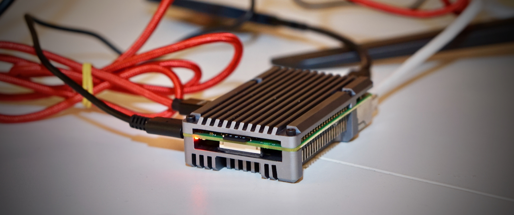
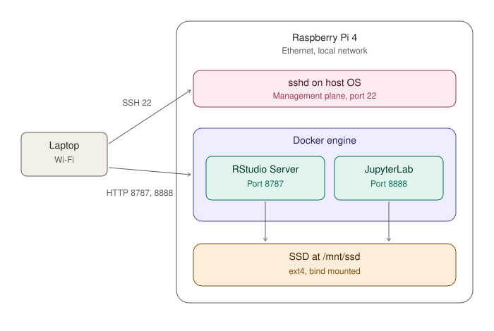
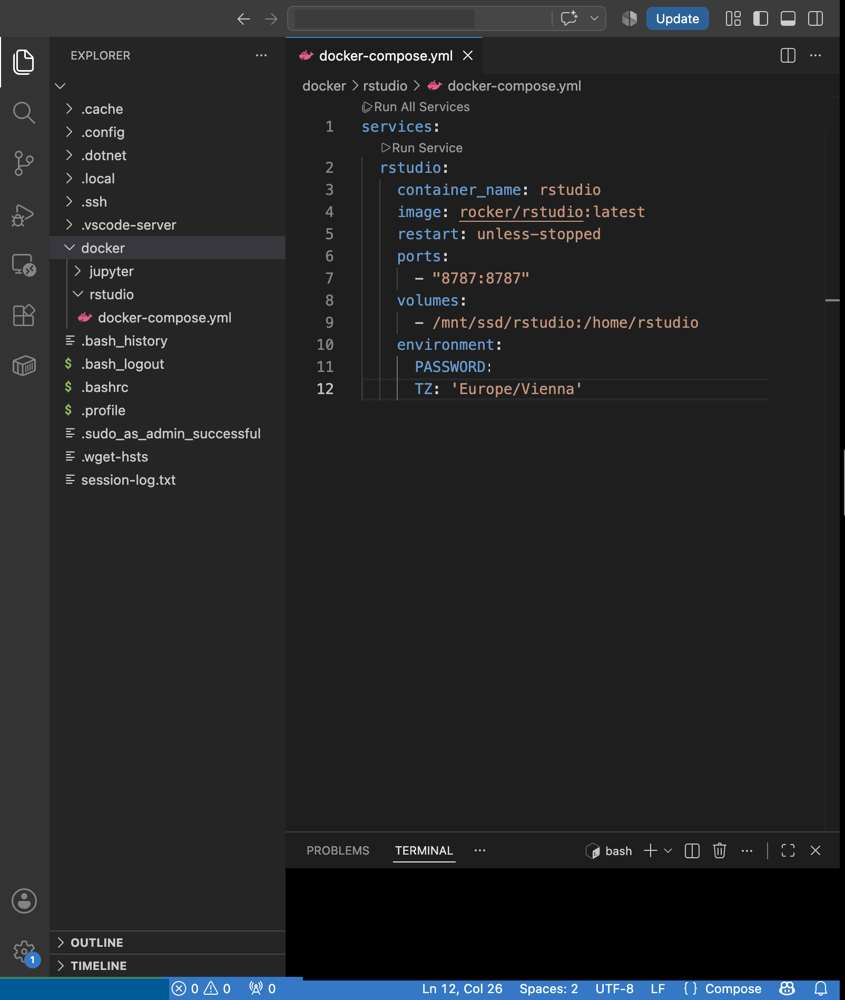
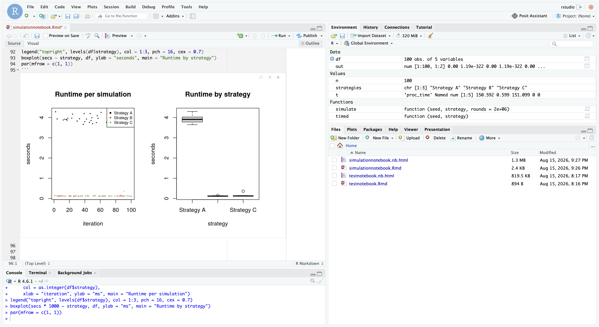

15th of August 2026 Infrastructure

An analytics server on a Raspberry Pi, in one evening
I had a Raspberry Pi 4 in a drawer and a spare SSD, and I wanted to see how far I could get in one evening. I didn't have a business case or a deadline, just an idea and an excuse to learn the infrastructure layer I have always left to somebody else. In this article I show you what I built, what I learned and share an honest note on what it is like to set something like this up with an AI assistant.
I did not need an analytics server. Docker compose was simply one of those things I had read about often enough without ever using it properly, and I wanted to see what it can do on hardware that sits in my own flat. It is 2026 and hosting on premises is a topic again anyway, due to the discussions around data sovereignty in the cloud.
The setup
My objective here is to build a small always-on machine running RStudio Server in the browser, with data on the SSD rather than the SD card, and the whole configuration in Git so it can be rebuilt if that card dies.

In order to connect to my Raspberry Pi, just freshly flashed, I use regular SSH. In addition I used a VS-Code Extension called Remote-SSH which mirrors all files and the environment of the Pi to your local machine. In my case I use a Mac where security tricked me and also my friend Claude quite a bit. Some privacy and security settings prohibit local network communication for e.g. VS Code by default. Make sure that:
System Settings → Privacy & Security → Local Network → Visual Studio Code
is set to on.
Docker was set up with one directory per service, each holding its own compose file. The services start and stop independently, so a broken container cannot block a working one.

The framework used was the rocker rstudio latest image (Rocker Project's RStudio Server). An image is a ready-made package that already contains R, RStudio Server and everything they need to run, so I do not have to install any of that myself. It is ARM64-verified which means this package is built for the kind of processor my Raspberry Pi has, which is a different one from most laptops and servers.
The specification restart: unless-stopped turns it into an
always-on service. Meaning Docker starts the container after a crash or
after the Pi reboots, leaving it off only if I stopped it intentionally.
Two things I want to bring to the interested readers' attention. The Pi is arm64, and plenty of popular images still ship amd64-only manifests. Docker then falls back to emulation that runs five to twenty times slower, so you get a container that technically works and is practically unusable. And the host directory must exist before the container starts, or Docker creates it owned by root and the service fails on every save while appearing to start perfectly.
I mounted the SSD by UUID rather than device name. Linux simply numbers
the drives it finds while booting: The first one becomes
sda, the second sdb, and so on. That order is
not fixed, so the moment you plug in a second drive, what used to be
sda can come up as sdb and the machine mounts
the wrong disk. A UUID is a permanent identifier that belongs to the
drive itself, so it stays correct no matter in which order things are
plugged in.
And we agreed to set nofail, or a disk that is unplugged at
boot drops the machine into emergency mode meaning no network, no SSH,
and you are walking over with a keyboard. Only one flag can make the
difference between a machine you can recover remotely and one you have
to physically visit.
A sentimental detour
Then I opened the browser on http port 8787 and there it was: The four panes, exactly how I remember it. I studied at Duke in 2019 and R was the language I did everything in. These days I write Python and almost nothing else. Python won the race. But the muscle memory was still intact. I did not expect a Raspberry Pi project to be nostalgic but it most definitely was and it felt like back on the 2nd floor of Perkins Library in The Grad Reading Room 211.
A container that starts is not a container that works, so I ran a simulation just like back in university. Gamblers faced a slightly unfavourable 40% win rate, playing two million rounds under three staking strategies. I compared the strategies and identified one that is promising for me to try on my next trip to Las Vegas.

Building this with AI
I could not have done this in an evening alone, not even with YouTube and Stack Overflow. Not because any single step is hard, but because the number of small unknowns is enormous and each one is effort and search. I would have lost my motivation on this. The AI gave some extremely helpful hints specifically for frameworks to use that I would not have been thinking of myself.
But twice I ended up in a loop where it kept proposing variations of the same fix. Each suggestion was reasonable in isolation but none of them worked. That is when you get out and do it yourself. Sometimes the AI is lacking direction and gets stuck.
The AI agent might help with syntax and documentation, but the direction is clearly not given by AI yet, be it intentional by the providers or unintentional due to shortcomings of the LLM itself.
What is next
I plan on hosting some other useful helpers and then terminate the entire setup since security freaks me out a little on this end. I will need more threat modeling and tests to check if this is secure enough to be used going forward. For now it was a very interesting and amusing experiment.
Note: If the AI is presented extremely favorable this can only be the case not because this would be written by AI but because I did let my Claude Code review this article and change typos only ;)